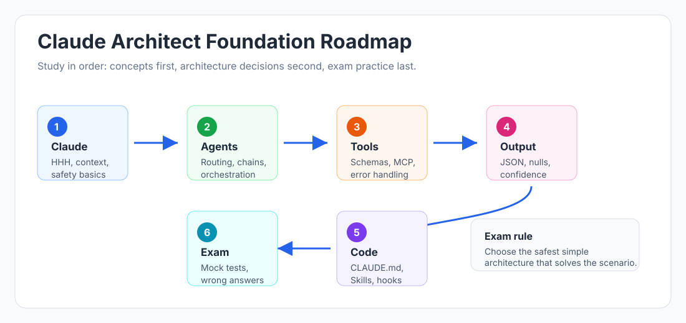

Claude Architect Foundation - Study Hub
Welcome to the Claude Architect Foundation course inside certification-study-hub.
This course is built for learners who want a practical, scenario-based path to the Claude Certified Architect - Foundations exam. It keeps the style simple: learn the concept, see the architecture, apply it to a realistic exam scenario, then revise with questions.
Start Here
New Learner Path
If you are new to Claude architecture, use this order:
- Read this README once.
- Open 00 - Certification Roadmap.
- Learn Claude basics before agent patterns.
- Study tool use and MCP slowly; these topics are high-yield.
- Study structured output and Claude Code workflows.
- Use Flashcards after each major section.
- Attempt chapter-wise questions.
- Read quick revision notes.
- Take the 60-question mock test.
- Review wrong answers until you can explain why the correct architecture is safer.
Simple rule: do not memorize only definitions. Claude certification-style questions reward architecture decisions.
Best Way To Read This Course
Do not start by opening random Markdown files. The easiest way to study is through the GitHub Pages version because it has sidebar navigation, responsive layout, diagrams, and direct links to the mock test.
Read the interactive course in the browser:
Open the Claude Architect Foundation Course
Use flashcards for fast recall:
Take the interactive mock test:
Start the 60-Question Claude Mock Test
Use this GitHub README as the source map. Use the interactive site for actual studying.
How To Access GitHub Pages
- Open the live site: Certification Study Hub
- Choose Claude Architect Foundation.
- Start with 00 - Certification Roadmap.
- Read each lesson from the left sidebar in order.
- Use the chapter-wise questions after finishing the lessons.
- Take the timed mock test only after you finish the revision notes.
Direct links:
- Claude Course Home
- Certification Roadmap
- Flashcards
- Chapter-Wise Practice Questions
- Quick Revision Notes
- 60-Question Mock Test
Certification Snapshot
| Item | Detail |
|---|---|
| Certification | Claude Certified Architect - Foundations |
| Provider | Anthropic |
| Best starting portal | Anthropic Academy / Skilljar |
| Main focus | Claude API, agentic architecture, tool use, MCP, structured output, Claude Code workflows, safety and reliability |
| Question style | Scenario-based multiple choice |
| Best preparation method | Official courses + hands-on practice + mock tests + revision notes |
Exam access, pricing, eligibility, domains, and passing requirements can change. Always verify the current details in Anthropic Academy before booking or attempting the assessment.
Visual Roadmap

Use the roadmap like this:
- Learn Claude basics and responsible deployment.
- Build agentic thinking: routing, chaining, orchestration, context management.
- Master tool use and MCP because these are core architect topics.
- Practice structured extraction with JSON schemas and human review.
- Learn Claude Code workflows for real developer productivity scenarios.
- Finish with mock tests, wrong-answer review, and official docs refresh.
Recommended Study Order
[ ]00 - Certification Roadmap[ ]01-introduction-to-claude/- Claude fundamentals, model behavior, safety[ ]02-agentic-patterns/- Agents, routing, chaining, orchestration, session/context management[ ]03-tool-use-and-mcp/- Tool definitions, MCP architecture, safety gates, structured error handling[ ]04-structured-output-and-extraction/- JSON schemas, ambiguity, confidence, batch processing, long documents[ ]05-claude-code-and-workflows/- CLAUDE.md, Skills, code review, exploration, session workflows[ ]Flashcards - fast recall for tools, MCP, agent patterns, and Claude Code traps[ ]practice-questions/- Chapter-wise questions[ ]revision-notes/- Day-before-exam revision[ ]mock-tests/- Full timed practice
Exam Domain Map
| Domain | What To Master | Course Sections |
|---|---|---|
| Agent architecture and orchestration | Agent loop, routing, prompt chaining, dynamic workers, session boundaries | 02-agentic-patterns/ |
| Tool design and MCP integration | Tool schemas, tool descriptions, resources, prompts, server/client flow, error handling | 03-tool-use-and-mcp/ |
| Claude Code configuration and workflows | CLAUDE.md, Skills, hooks, sessions, code review, CI/CD, exploration | 05-claude-code-and-workflows/ |
| Prompt engineering and structured output | JSON schema, extraction accuracy, null handling, ambiguity, confidence scoring | 04-structured-output-and-extraction/ |
| Context management and reliability | Context limits, compaction, retries, escalation, human review, safety gates | All sections, especially chapters 02-04 |
High-yield rule: Tool use, MCP, agent patterns, and structured output are the core of the architect mindset. Do not only memorize definitions. Practice choosing the safest architecture for a scenario.
Official Certification And Learning Links
Certification And Anthropic Academy
- Anthropic Academy course catalog
- Claude Certified Architect - Foundations access request
- Anthropic Academy sign in
- Claude Partner Network
- Anthropic support
- Skilljar privacy policy
Anthropic Academy Courses To Study First
- Claude 101
- Claude Code 101
- Claude Platform 101
- Claude Code in Action
- Building with the Claude API
- Introduction to Model Context Protocol
- Model Context Protocol: Advanced Topics
- Introduction to agent skills
- Introduction to subagents
- AI Fluency: Framework & Foundations
- AI Capabilities and Limitations
- Claude with Amazon Bedrock
- Claude with Google Cloud's Vertex AI
Claude API And Platform Docs
- Claude Developer Platform docs
- Messages API
- Tool use overview
- How tool use works
- Define tools
- Handle tool calls
- Parallel tool use
- Strict tool use
- Structured outputs
- Prompt engineering overview
- Context windows
- Prompt caching
- Message Batches
- PDF support
- Citations
- Anthropic Cookbook
Claude Agent SDK And Agentic Systems
- Claude Agent SDK overview
- Agent SDK hooks
- Agent SDK subagents
- Agent SDK sessions
- Building Effective AI Agents
Claude Code Docs
- Claude Code overview
- How Claude Code works
- Store instructions and memories / CLAUDE.md
- Manage sessions
- Common workflows
- Claude Code best practices
- Skills
- Hooks
- Subagents
- MCP in Claude Code
- GitHub Actions
- GitLab CI/CD
- Headless mode
Model Context Protocol
- MCP official documentation
- MCP architecture
- MCP specification
- MCP servers
- MCP clients
- MCP SDKs
- MCP Inspector
- MCP GitHub organization
Cloud Platform References
Community Reference
- paullarionov/claude-certified-architect - useful for comparing study scope, practice style, and certification resource organization. Use it as inspiration only; this course keeps its own English-only notes, examples, and exam practice style.
How To Study And Get Certified
- Week 1 - Build the base. Complete Claude 101, Claude Platform 101, and this course chapters 01-02.
- Week 2 - Go deep on architecture. Complete Tool Use, MCP, and Structured Output sections. Draw the flows yourself.
- Week 3 - Practice like the exam. Complete Claude Code chapters, chapter-wise questions, and at least two timed mock-test attempts.
- Final 48 hours - Review wrong answers. Do not reread everything. Focus on questions you missed, safety gates, MCP errors, null handling, and context management.
Where To Focus Most
If your time is limited, focus in this order:
- Tool Use and MCP - tool schemas, tool choice, tool results, MCP tools/resources/prompts, protocol errors vs tool errors.
- Agentic Patterns - routing, prompt chaining, orchestrator-workers, agent loop, context/session management.
- Claude Code Workflows - CLAUDE.md vs Skills, project vs user instructions, independent review, batch vs real-time review, structured review output.
- Structured Output - JSON schema, nullable fields, confidence scores, human review, batch processing limitations.
- Claude Fundamentals - HHH, Constitutional AI, context window, stateless API behavior, responsible deployment.
High-yield Claude Code traps:
- Exemplar code for one workflow belongs in a Skill, not always-on CLAUDE.md.
- Team-wide rules belong in project-level CLAUDE.md, not user-level
~/.claude/CLAUDE.md. - A generated-code review should use a fresh independent session.
- Batch processing fits deep async analysis, not pre-merge hooks.
- Batch processing cannot support mid-request tool calls.
- Automated PR comments need structured JSON output with schema, not prompt-only JSON.
- Comment/docstring review needs explicit criteria: flag only claims that contradict actual code behavior.
Certification Readiness Checklist
You are ready to attempt the real certification process when you can:
- Explain tool use vs MCP without notes.
- Choose between routing, chaining, orchestrator-workers, and agent loop from a scenario.
- Decide when an action needs human confirmation or an application-side safety gate.
- Design a JSON extraction schema with
nullhandling and confidence review. - Explain why same-session self-review is weaker than independent review.
- Score at least 70-80% on the mock test twice.
- Review every wrong answer and explain why the correct option is safer or more architecturally sound.
To register or request access, start from Anthropic Academy and the Claude Certified Architect - Foundations access request. Always verify the current official process before attempting the exam.
Top Exam Tips
- Claude does not execute client tools directly. Claude requests a tool call; your application executes it and returns a tool result.
- Tool descriptions are part of the architecture. Vague descriptions cause wrong tool selection.
- MCP is the connection standard. Tools take actions, resources expose read-only context, prompts provide reusable instructions.
- Prompt instructions are not enough for high-risk rules. Use application enforcement, hooks, permissions, and human confirmation.
- For extraction, schema-valid output is not the same as semantically correct output. Add validation, confidence, sampling, and human review.
- Context window capacity is not the same as attention quality. Long documents still need chunking, overlap, and merge logic.
- Claude Code workflow questions usually reward Explore -> Plan -> Code -> Verify -> Commit.
Contributing
Add only English content to this course. Keep examples clear, practical, and exam-focused. Prefer scenario questions, tables, diagrams, and short revision summaries over long theory dumps.
Start with 00 - Certification Roadmap.